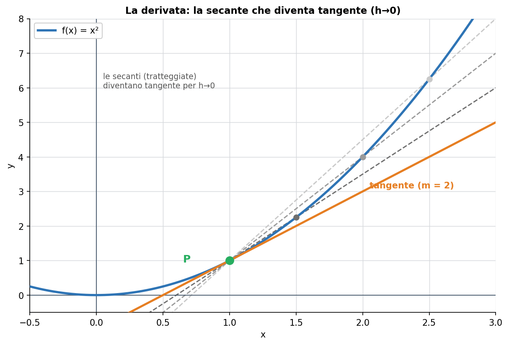
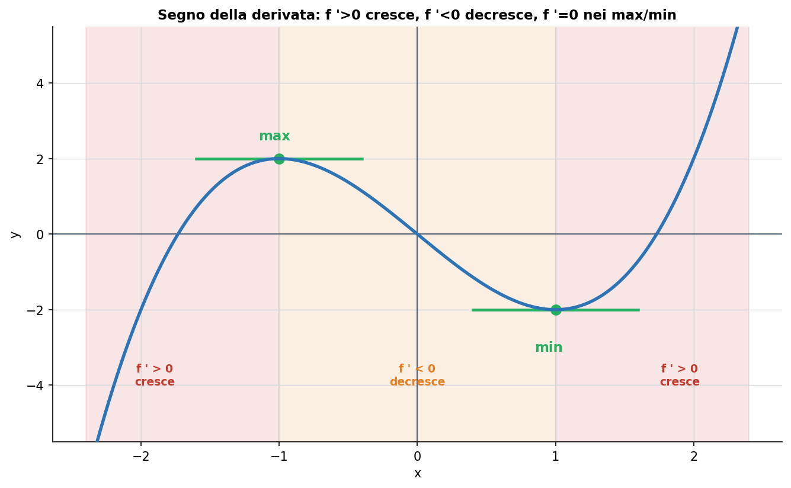
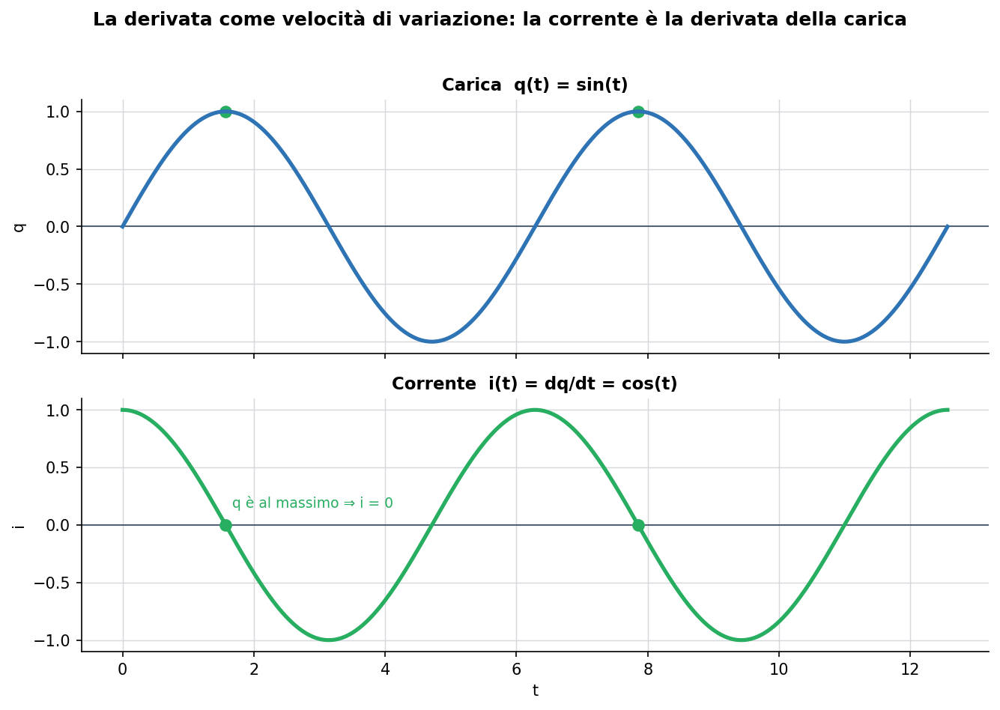

Blocco calcolo differenziale in una variabile del programma di Udine (MATH-03/A). La derivata è definita a partire dai limiti (Lezione 3) e serve per lo studio di funzione e per i problemi di ottimizzazione, entrambi obiettivi espliciti del corso.
1. L'idea di derivata
La derivata misura quanto in fretta cambia una funzione. Se f(x) descrive una posizione, la derivata è la velocità; se descrive una carica, la derivata è la corrente. In una parola: la derivata è la velocità di variazione della funzione, punto per punto.
2. Dal rapporto incrementale alla tangente
Partiamo da due punti del grafico distanti h. La pendenza della retta che li unisce (la secante) è il rapporto incrementale:
[ f(x + h) − f(x) ] / h
Ora facciamo avvicinare il secondo punto al primo, cioè h → 0. La secante ruota e si “incolla” alla curva diventando la retta tangente. La pendenza di quella tangente è la derivata:
f '(x) = lim (h→0) [ f(x + h) − f(x) ] / h

Fig. 1 — Le secanti (tratteggiate) ruotano verso la tangente (arancione) man mano che h → 0. La derivata è la pendenza della tangente.
3. Significato geometrico
La derivata in un punto è la pendenza della retta tangente al grafico in quel punto. Pendenza grande = curva ripida (cambia in fretta); pendenza piccola = curva quasi piatta (cambia poco); pendenza nulla = tangente orizzontale (la funzione, per un istante, non cresce né decresce).
4. Le derivate elementari
Poche formule da sapere a memoria: sono i mattoni con cui si deriva tutto il resto.
| Funzione f(x) | Derivata f '(x) |
|---|---|
| c (costante) | 0 |
| xⁿ | n · xⁿ⁻¹ |
| √x | 1 / (2√x) |
| eˣ | eˣ |
| ln x | 1 / x |
| sin x | cos x |
| cos x | − sin x |
Esempio. La derivata di x³ è 3x²; la derivata di x⁵ è 5x⁴. La regola xⁿ → n·xⁿ⁻¹ le copre entrambe.
5. Le regole di derivazione
Per combinare le funzioni si usano quattro regole:
Somma: (f + g)' = f ' + g ' (si deriva pezzo per pezzo).
Prodotto: (f · g)' = f '·g + f·g '.
Quoziente: (f / g)' = (f '·g − f·g ') / g².
Catena (funzione composta): [ g(f(x)) ]' = g '(f(x)) · f '(x) — si deriva “da fuori a dentro”.
Esempio svolto (catena). Derivata di (2x + 1)³: fuori la potenza, dentro 2x + 1. Risultato: 3·(2x + 1)² · 2 = 6·(2x + 1)².
Esempio svolto (prodotto). Derivata di x·eˣ: (1)·eˣ + x·eˣ = eˣ·(1 + x).
6. Derivata, crescita e punti di massimo/minimo
Il segno della derivata dice se la funzione cresce o decresce, collegando questa lezione alla monotonìa della Lezione 2:
f '(x) > 0 sull'intervallo ⇒ la funzione cresce.
f '(x) < 0 sull'intervallo ⇒ la funzione decresce.
f '(x) = 0 in un punto ⇒ punto stazionario: candidato massimo o minimo (tangente orizzontale).

Fig. 2 — Dove la derivata è positiva la funzione cresce, dove è negativa decresce; nei punti di massimo e minimo la tangente è orizzontale (f ' = 0).
È questo il meccanismo dei problemi di ottimizzazione: per trovare il massimo o il minimo di una grandezza, si cercano i punti dove la derivata si annulla.
7. A cosa serve in elettronica
La derivata è ovunque, perché quasi tutte le leggi dei componenti legano una grandezza alla velocità di variazione di un'altra.
Corrente e carica: i = dq/dt (la corrente è la derivata della carica nel tempo).
Induttore: v = L · di/dt (la tensione dipende da quanto rapidamente varia la corrente).
Condensatore: i = C · dv/dt (la corrente dipende da quanto rapidamente varia la tensione).

Fig. 3 — Se la carica è q(t) = sin(t), la corrente è la sua derivata i(t) = cos(t): dove q è al massimo, la sua velocità di variazione (e quindi i) è nulla.
Errori tipici da evitare
Dimenticare la regola della catena quando si deriva una funzione composta (moltiplicare per la derivata interna).
Applicare la regola del prodotto come se fosse f '·g ' : è invece f '·g + f·g '.
Concludere che f '(x) = 0 sia sempre un massimo o un minimo: va verificato (può essere un flesso a tangente orizzontale).
Confondere la derivata (pendenza della tangente) con il valore della funzione.